欠了两年（2018-04-12~2020-04-21）的欠账终于还是要还啊。
NFA
就一从一个状态给定一个符号（允许为空符号$\epsilon $）可能会转换到多个其他状态的自动机。
图中的：
- 圈指一个状态
- 箭头和上面的字符指在某个状态时，输入这个字符后，可以转换到箭头指向的状态
- 双圈指接受状态，就是说如果全部输入串都输入完成后停在了这个状态，那么这个输入就是NFA对应的正规语言的句子。
例如下图就是一个识别$(a*|b*)$的NFA。
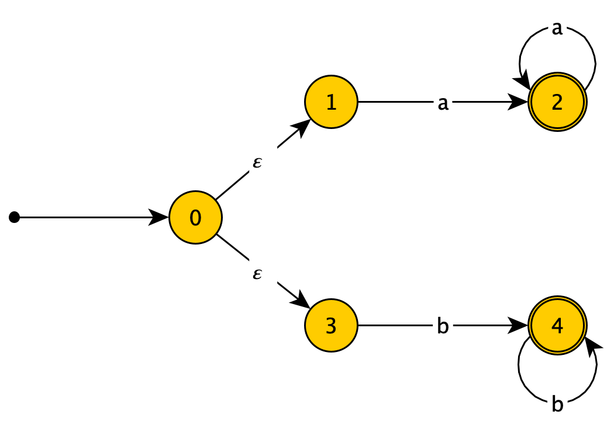
值得注意的是NFA并非“不能进行匹配”，只是进行匹配的时候，由于给定一个状态和一个输入可以转换到多个不同的状态，所以如果全部状态输入完后状态机没有停在接受状态，也不代表状态机不能匹配所给的输入，也有可能是选择的状态转换不正确，可以回朔后选择其他状态转换再试0。
如果同一状态相同输入能转换到的不同状态的数量过多，使用NFA进行匹配就会较为没有效率。
DFA
DFA是一种特殊的NFA1。
没有$\epsilon$边，且从一个状态给定一个符号只能转换到一个状态的NFA就是DFA。
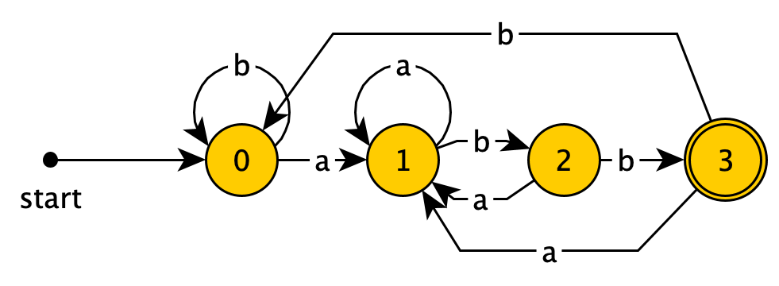
DFA的匹配过程就很直接了，跟着输入一直走，能走到接受状态就行。所以DFA本身的匹配速度是很快的。
NFA的确定化
例子
我们从一个例子2开始讲解：
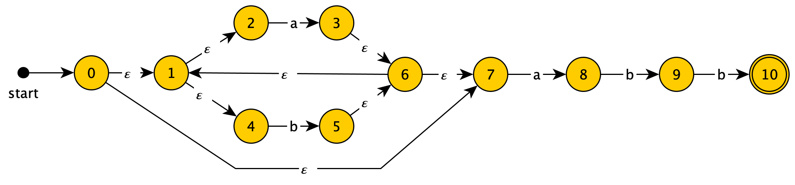
该NFA识别的是$(a|b)*abb$。
我们将这个NFA化为DFA。
一开始从start进去，即使不作任何输入，从状态$0$开始凭借着$\epsilon$边，也可以转到状态$\{0,1,2,4,7\}$3，那么因为DFA中没有$\epsilon$边，而一个start状态又是必须的，在我们生成的DFA中，这些个状态就只能化为一个状态，称之为$A$。
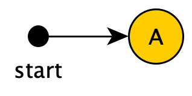
然后看看我们从这个$A$状态（也就是NFA中的$\{0,1,2,4,7\}$这几个状态）在输入$a$时能转到哪些状态：
- 从$2$，能转到$3$
- 从$7$，能转到$8$
- 从转到的$3$和$8$中，再进行一次$\epsilon$转换（因为这不需要任何输入），能转到$\{1,2,3,4,6,7,8\}$
所以在向原NFA中$A$对应的状态输入了$a$后，可能转到的NFA状态是$\{1,2,3,4,6,7,8\}$，这种组合显然并不是$A$状态，我们把它化为一个状态$B$，并连接在$A$后面：
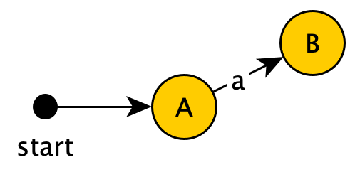
同理从$A$由输入$b$能到达的状态$C=\{1,2,4,5,6,7\}$
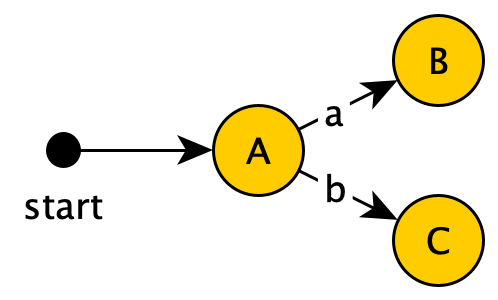
至此从$A$出发的DFA中的路径就考察完了。
为了方便观察，我将NFA中的状态对应到的DFA中的状态标注在图上：
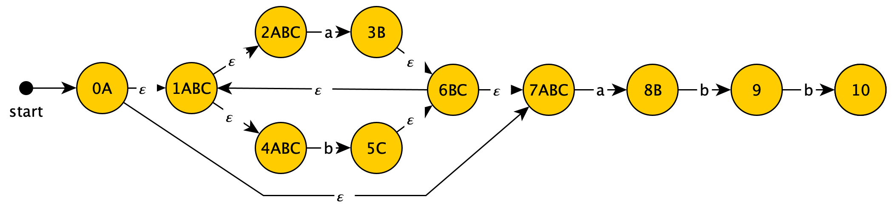
我们继续从$B$开始考察：
- 从这个状态经$a$，可以到达的状态是$\{1,2,3,4,6,7,8\}$，这又落回了$B$，故$B$经输入$a$转到自身。
- 从这个状态经$b$，可以到达的状态是$\{1,2,4,5,6,7,9\}$，这种NFA状态的组合在之前从未出现过，故将其化为一个DFA状态$D$
然后得到：
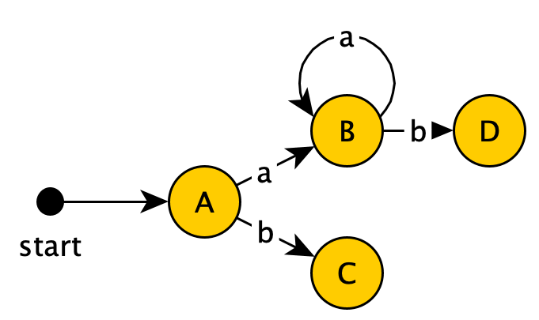
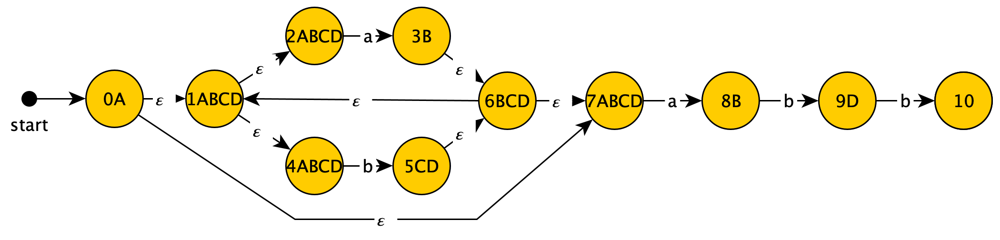
接着考察$C$：
- $C+a \rightarrow \{1,2,3,4,6,7,8\}$，落入了$B$
- $C+b \rightarrow \{1,2,4,5,6,7\}$，落入了$C$
所以：
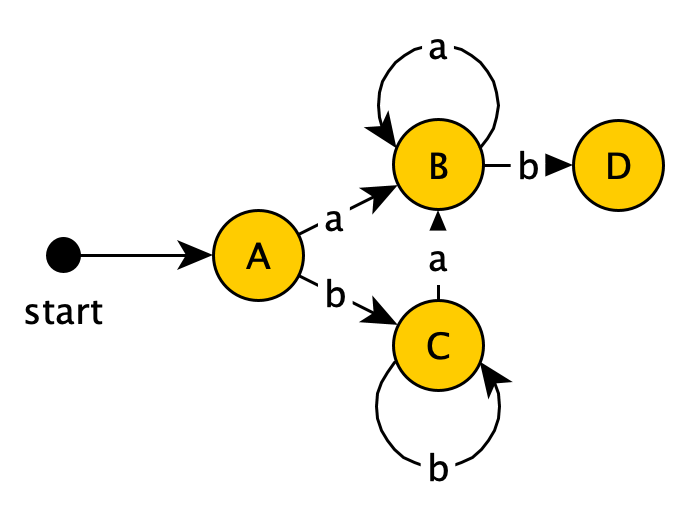
然后是$D$：
- $D+a \rightarrow \{1,2,3,4,6,7,8\}$，落入了$B$
- $D+b \rightarrow \{1,2,4,5,6,7,10\}$，创建新状态$E$，由于$E$包含了旧NFA的接受状态$10$，故其是DFA的接受状态。
所以得到：
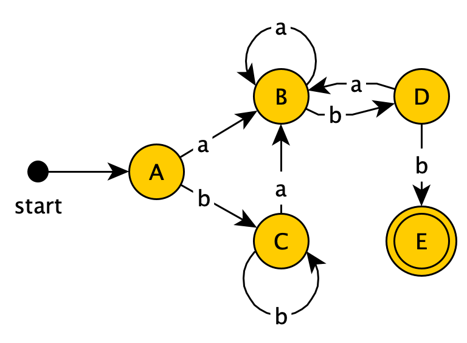
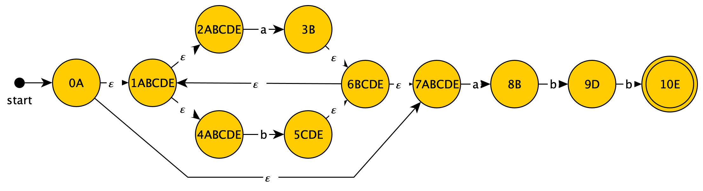
然后是$E$：
- $E+a \rightarrow B$
- $E+b\rightarrow C$
所以可以得到：
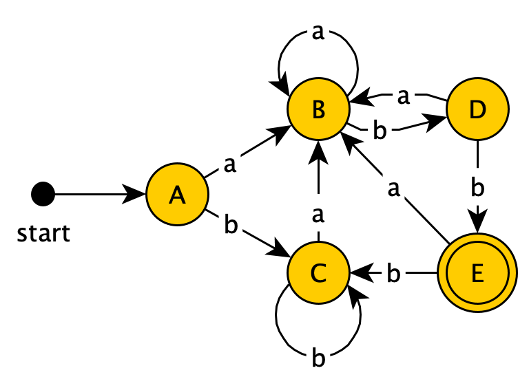
由于这个DFA里面所有的状态都被考虑过了，所以这就是最后的结果了。
附上最后得到的NFA状态到DFA状态的对应关系表：
| NFA | DFA |
|---|---|
| $0,1,2,4,7$ | $A$ |
| $1,2,3,4,6,7,8$ | $B$ |
| $1,2,4,5,6,7$ | $C$ |
| $1,2,4,5,6,7,9$ | $D$ |
| $1,2,4,5,6,7,10$ | $E$ |
算法
总结上面的过程，我们可以得到NFA的确定化算法：
- 将NFA的开始状态及其所有可通过$\epsilon$边的状态映射为DFA的开始状态
- 如果DFA中的每个状态都被“考虑过”，则算法完成
- 否则，考虑DFA中的一个没有被考虑过的状态$N$：
- 对字母表里的每个字母$ch$
- 找出这个节点对应NFA中的所有节点经过$ch$加上任意多的$\epsilon$边能到达的所有状态的集合
- 若这个集合是DFA中已经存在的某个状态$M$对应的NFA状态集合的子集，则添加连线$N + ch = M$
- 否则向DFA中添加新状态$P$，其对应NFA状态集合就是上述集合，如果这个集合中包含接受状态，那么这个节点也是接受状态，并添加连线$N+ch=P$
- 对字母表里的每个字母$ch$
- 最终得到的DFA即为所求
代码4
代码见Github仓库
1 | fun toDFA(): Deterministic { |
0. 就像DFS那样。 ↩
1. “确定性自动机是一种特殊的非确定性自动机”听上去太怪异了，实际上应该称NFA为“不一定确定自动机”，而将除DFA以外的NFA称为“非确定性自动机”感觉才对，我想这大概可能是翻译的锅吧。 ↩
2. 这个例子来源于龙书 ↩
3. 注意每个状态可以看作和自己有一根$\epsilon$边相连 ↩
4. 我两年前写的代码真是惨不忍睹啊…… ↩